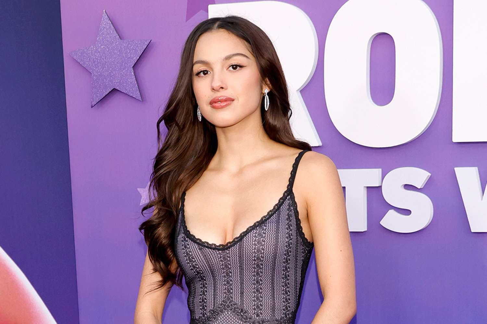

Olivia Rodrigo
About Olivia
Olivia Rodrigo (born February 20, 2003) is an American singer-songwriter
and actress. She rose to fame on Disney Channel and gained worldwide
recognition with her debut single "drivers license" in 2021.
Key Contributions
- Shaped Gen Z pop with emotional storytelling.
- Inspired new singer-songwriters worldwide.
- Won 3 Grammy Awards early in her career.
- Brought pop-punk influences back to charts.

Official Site |
Wikipedia
Learn More